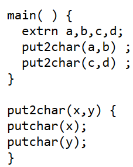
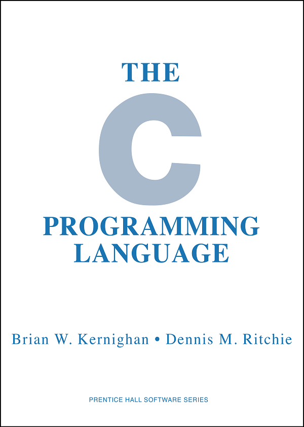

Создатели языка C
Язык программирования C был разработан в Bell Telephone Laboratories, американском исследовательском центре, занимающимся исследованиями и разработками в области телекоммуникации и электронных систем, который появился как результат слияния инженерных и технических отделов компаний Western Electric и AT&T (American Telephone and Telegraph Company). Разработал язык сотрудник данного центра Деннис Макалистер Ритчи (Dennis MacAlistair Ritchie) во время работы с Кеннетом Томпсоном и группой других сотрудников над операционной системой Unix. Деннис Ритчи, родившийся 9 сентября 1941 года в Нью-Йорке, закончил Гарвард в 1963, позднее, в 1968 году, он защитил докторскую диссертацию на тему «Структура программы и вычислительная сложность» (в оригинале: Program Structure and Computational Complexity; Вычислительная сложность - это количественная характеристика, которая говорит о том, сколько времени, либо какой объём памяти потребуется для выполнения алгоритма.). В компании Bell Labs начал работать в 1967 году, и оставался в ней до выхода на пенсию в 2007 году. Умер 12 Октября 2011 года.
Необходимо так же сказать о вышеупомянутом Кеннету Лейну Томпсону (Kenneth Lane Thompson), основном разработчике операционной системы Unix, создавший язык программирования B, который Ритчи использовал как основу для языка C. Родился Кен 4 февраля 1943 года в Новом Орлеане, в 1965 году получил степень бакалавра, а в 1966 году – магистра, в области электротехники и информатике. В Bell Laboratories занимался разработкой операционной системы Multics (Multics operational system), некоторые идеи которой, впоследствии он воплотил в Unix.
Причины разработки языка C
Разработка языка C неразрывно связана с упомянутой ранее Unix, так как C был разработан именно для улучшения работы данной операционной системой. Как уже упоминалось выше, Unix является реализацией идей ОС Multics, которую с 1964 года совместно разрабатывали Массачусетский технологический институт (Massachusetts Institute of Technology), компания General Electric и Bell Telephone Laboratories в рамках проекта под названием Multiple Access Computers, начатого Массачусетским институтом в 1963 году. В 1969 Bell Labs прекращает работу над проектом. Группа разработчиков во главе с Кеном Томпсоном, Деннисом Ритчи и Дугласом Макилроем решают продолжить работу над ОС. Изначально работа велась на ассемблере мини-компьютера PDP-7. Впоследствии ядро Unix было переписано на языке B, созданном Кеном Томпсоном. После покупки компанией в 1970 году одной из первых моделей ЭВМ PDP-11 появилась потребность в новом языке для ОС, из-за несоответствия устройства ЭВМ и механизмов работы языка B. Данную проблему решил Ритчи, создав новый язык программирования C, на который в 1973 году было переписано ядро ОС.
Языки предшественники
Как уже отмечалось выше, за основу языка C Деннис Ритчи взял созданный Кеном Томпсоном язык B, но также необходимо отметить язык BCPL (Basic Combined Programming Language), который создал Мартин Ричардс (Martin Richards) в 1966-1967 годах в Кембриджском университете (University of Cambridge). Этот язык оказал серьёзное влияние как на язык B, так и на язык C. Сам BCPL, как следует из его названия, является упрощённой версией языка программирования CPL (Combined Programming Language), из которого Мартин убрал затрудняющие компиляцию программы. Именно BCPL использовался для создания ОС Multics.
В 1969 году, после начала работы над Unix, Кен Томпсон решает создать язык программирования высокого уровня на замену ассемблера, для упрощения дальнейшей работы над ОС, а также повышения работоспособности программы. Язык B создавался на основе языка BCPL, но с синтаксическим изменениями и удалением ненужных, по мнению Кеннета, функций. Все изменения были призваны уменьшить вес программ, написанных с использованием B, так как на компьютере PDP-7, на котором проводилась разработка Unix, был крайне малый объём памяти.
Последующее создание языка C на основе этих двух языков было вызвано переносом разработки на более сложную ЭВМ PDP-17, который выявил недостатки общих ключевых особенностей B и BCPL, в первую очередь связанных с обработкой символов программы, которое оказалось нерационально усложнённым для вычислительной системы другого типа, а также общей низкой скоростью выполнения программы компилятором.
Развитие языка C
Работа Денниса Ритчи над расширением и последующим преобразованием языка B в C началась в 1971 году. Первые версии C, не сильно отличавшиеся от B, носили название New B, или NB. Первым расширением, внесённым в язык, было добавление различных типов данных. BCPL и B были языками без типовыми. Все данные являются либо восьмеричными числами, причём чисел с плавающей точкой нет, либо символами из таблицы символов ASCII, а все арифметические операции являются целочисленными и не имеют проверки типа данных переменной, из-за чего возможны арифметические действия с символами, которые будут преобразовываться в соответствии со своими номерами в ASCII. В NB были добавлены типы int и char, для целочисленных и символьных данных соответственно. Так же была изменена система указателей – переменных, хранящих данные о расположении в памяти определённых функций. Если в B каждому указателю отводилось место в памяти, и каждый раз, когда происходило обращение к структуре или массиву, к которому тот относился, происходила конвертация символов имени указателя в битовый адрес ячейки данного указателя, которая в свою очередь и вела к необходимой структуре. Вместо этого в NB указатель не хранился в памяти, а генерировался, когда в выражении упоминалось имя соответствующей структуры или массива. Это позволило реализовать систему из произвольного количества вложенных друг в друга различных структур и массивов. В дальнейшем была введена возможность описать структуры, к которым относиться данный объект. Сделано это было с целью повышения удобства компоновки различных объектов. После добавления синтаксиса, соответствующего новым возможностям языка, а также создания компилятора, в 1972 году название языка, который уже сильно отличался от своего предшественника, было изменено с New B на C, с которым он и будет существовать в дальнейшем. Несколько позже, в 1973 году, в язык был добавлен препроцессор, что было сделано частично из-за наличия в языке BCPL схожего механизма включения файлов. Задачей данного препроцессора и была реализация возможности включения одних файлов в другие и в саму программу, а также подстановка строк, то есть возможность при компиляции заменять отдельные части исходного текста, на заранее заданные шаблоны. Изначальная ограниченность функционала препроцессора объясняется тем, что сначала он рассматривался исключительно как дополнение к языку, расширением возможностей которого было выполнено позже.
Следующей важной ступенью развития языка C стало публикация в 1978 году книги «Язык программирования C» (The C Programming Language) написанной Деннисом Ритчи и Брайаном Керниганом, также известная как K&R, а версия C, описанная в ней, стала называться K&R C.Эта книга является справочником, описывающим все основные элементы функциональности языка, а также взаимодействия с ОС Unix. Фактически, данная книга стала первым стандартом языка C, показав пользователям официальный метод создания программ. К этому году в языке успели произойти некоторые изменения. Одним из изменений было добавление новых типов данных: беззнаковые, длинные unsigned long и unsigned long int, которые хранят целое число, превышающее максимальный количественный предел типа int, а именно более 2 байт, но меньше 4 байт, но являющееся большим или равным нулю, без возможности стать отрицательным; объединение union, которое позволяет хранить в одном участке памяти несколько переменных, различного типа; перечисление enum, задающее все возможные значения переменной. Основные изменения были связаны с улучшением переносимости языка, на новые платформы и улучшению работы системы типов. Для последнего в язык была внесена возможность приведения типов данных, то есть изменения типа данных переменной для выполнения операции, невозможной с предыдущим типом этой переменной.
В 1983 году было принято решение создать официальную формальную стандартизацию для языка C. Вызвано это было тем, что книга K&R, которая больше всего походит на стандарт языка, уже не соответствовало требованиям времени. К примеру, в K&R не описывается тип данных void, который описывает функцию, не возвращающую, после исполнения, никакое значение. Для создания единого стандарта языка C Американский национальный институт стандартов (American national standards institute или ANSI) создал комитет X3J11, который в 1989 году представил выработанный стандарт, принятый Международной организацией по стандартам (International Organization for Standardization или ISO) в 1990. Этот стандарт имел название ISO/IEC 9899-1990, а язык C, описанный в нём, известен как ANSI C или C90. Единственным важным изменением, внесённым в язык новым стандартом, была система ввода формальных параметров функции, заимствованная из языка программирования C++. В остальном язык остался практически неизменным. Следующие изменения произошли в языке в 2000 году, когда был принят стандарт ISO/IEC 9899-1999, или C99. Важным изменением, внесённым в новом стандарте, являлась возможность объявлять новые переменные в любом месте кода. Также к важным изменениям относится введение типа данных long long int, обозначающего целое число, превышающее по размеру 4 байта, но меньше 8 байт, и массивов переменной длины, то есть массива, длина которого определяется во время выполнения.
Последующими стандартами языка C являются ISO/IEC 9899-2011, или C11, и ISO/IEC 9899-2018, или C18. C11 направлен в основном на улучшения совместимости с современными компиляторами, для реализации таких возможностей, как многопоточность, то есть выполнения нескольких операций или программ одновременно. Также была введена возможность байтового выравнивания, то есть ограничения размера переменной диапазоном, равное 2n байт, где n задаётся либо вручную, в случае использования _Alignas, либо автоматически на этапе компиляции, при использовании _Alignof. Остальные изменения направлены на повышения удобства написания программ, такие как введения интерфейса проверки границ переменной, позволяющий до компиляции понять, не превышает ли значение в переменной максимально допустимый предел, и возможность создавать анонимные объединения и структуры, которые упрощают работу с вложенными объектами. C18 не вносит в язык новый функционал, а лишь исправляет ошибки в C11.